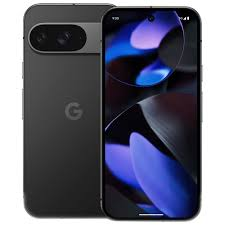
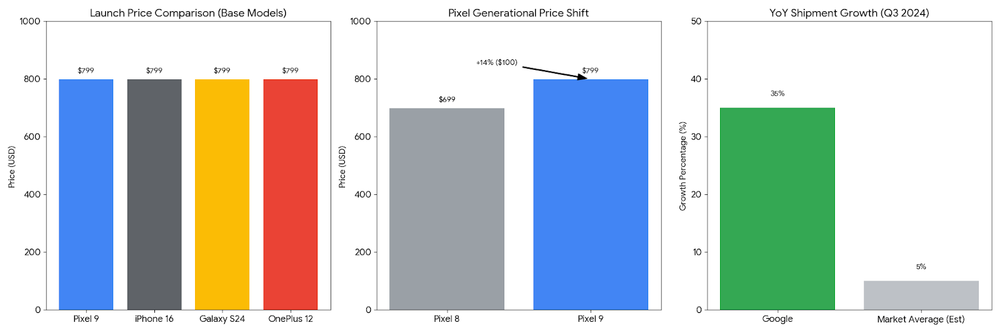

The Tensor G4 is an AI-first chip, prioritizing speed for Google's unique software features and better sustained performance over peak raw benchmark scores.
AI Speed: The biggest jump is for on-device AI. It features 3X Faster Gemini Nano, which can process the on-device language model up to 3 times faster than the Tensor G3, making complex features like real-time text summaries and advanced Magic Editor features instant.
Performance: Provides a faster everyday user experience. It uses a CPU Upgrade with newer, more efficient ARM cores and is clocked at higher speeds. This translates to Google's claim of 17% faster app launching and 20% faster web browsing compared to the Pixel 8.
Efficiency & Thermals: Better for long-term use. The chip is built on a refined 4nm process and includes better thermal management (less throttling), allowing it to sustain peak performance for longer without overheating. The increased efficiency contributes to Better Battery Life.
Connectivity: Future-proofing the device. It supports the latest standards, including Wi-Fi 7 and a new 5G Modem for faster, more stable network connections.
Gemini AI Integration:Comes with Google's built-in AI assistant,Gemini,which powers a range of new features like AI-generated summaries, advanced photo editing with features likeMagic Editor, ReimagineandAdd Me, and smart assistance.

Visual Breakdown of Pixel 9 StatisticsPrice vs. Competitors: The Pixel 9 has moved away from its "budget flagship" roots to compete head-to-head with the iPhone 16 and Galaxy S24, with all three starting at a standardized $799. This reflects Google's confidence in its premium hardware and AI features.
Generational Price Shift: There is a notable $100 price increase (approx. 14%) from the Pixel 8 to the Pixel 9. This cost covers significant hardware upgrades, including a jump to 12GB of RAM (required for on-device AI), a much brighter "Actua" display, and a faster ultrasonic fingerprint sensor.
Market Growth: Despite the price hike, Google has seen a massive 35% Year-over-Year shipment growth in late 2024 and early 2025. This outpaces the general market average and indicates that consumers are finding value in the AI-centric "Gemini" features and the industry-leading 7-year update promise.
| Feature | Pixel 9 Advantage | Why it matters |
|---|---|---|
| Software Support | 7 Years (until 2031) | Highest longevity in the industry, maximizing resale value. |
| Photography | AI-driven "Add Me" & Best HDR | Easiest camera for "real life" shots of moving subjects. |
| Intelligence | Tensor G4 & Gemini Nano | Most deeply integrated AI for daily tasks like searching screenshots. |
| Hardware | Ultrasonic Fingerprint Sensor | Significantly more reliable than the optical sensors on older Pixels. |